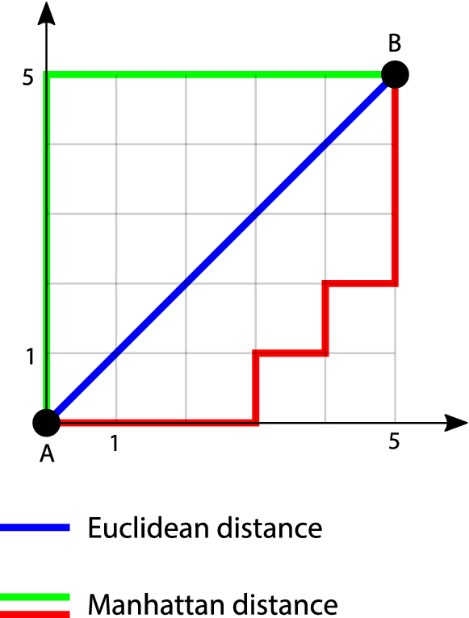

4. K nearest Neighbors
Contents
4. K nearest Neighbors¶
Introduction¶
Machine learning is a scientific technique where the computers learn how to solve a problem, without explicitly program them. Deep learning is currently leading the machine learning race powered by better algorithms, computation power and large data. Still machine learning classical algorithms have their strong position in the field.
In machine learning, classification is the process of recognizing, understanding, and grouping ideas and objects into preset categories or “sub-populations.” Using pre-categorized training datasets, machine learning programs use a variety of supervised learning algorithms to classify future datasets into categories. So many decisions and outcomes can be classified into ‘yes,something happened,’ or ‘no, that thing didn’t happen.’ This something can be if someone bought an item or not, if a person defaulted on a credit card or not, the stock market went up or not, or even if a tumor is cancerous or not. These are all 1’s and 0’s!
Luckily, there are lots of methods to figure out what affects if something is a 1 or a 0, as well as to predict if something will be a 1 or a 0. We’ll be focusing on two for this lesson, logistic regression and the k-nearest neighbors algorithm (kNN). We focus on these two as they both do the same task but through very different means.
Logistic regression is a parametric statistical method that is an extension of linear regression (and thus has assumptions that should be met). kNN is a non-parametric algorithm that is then free from assumptions about the relationship between the target and feature. The differences in the nature of these models brings up a fundamental question - how do we compare them? If both work on a given data set, how do we choose one over the other? Thus, we’ll be diving into the world of first training models on a set of data and then testing the accuracy on a different set of data. Under this paradigm we choose the model that does the best at explaining unseen data! In the chapter, we will look into their basic logic, advantages, disadvantages, assumptions, effects of co-linearity & outliers, hyper-parameters, mutual comparisons etc.
In this tutorial, you’ll learn:
Explain the kNN algorithm both intuitively and mathematically
Implement kNN in Python from scratch using NumPy
Use kNN in Python with scikit-learn
Tune hyperparameters of kNN using GridSearchCV
Add bagging to kNN for better performance
KNN VS Logistic Regression¶

Logistic regression¶
Logistic regression in machine learning is a classification algorithm that is mainly used for binary and multivariate classification problems. Eventually, when the term ‘Regression’ appears, it is not a model of regression, but a model of classification. T
his algorithm works on the principle of maximum likelihood estimation, where the maximization of the likelihood function is performed, and the best-fit line is obtained according to the distribution of the data on the plot. To frame the binary output model, it utilizes a logistic function, such as the Sigmoid function. The output of the logistic regression will be a probability (0≤x≤1), and can be adopted to predict the binary 0 or 1 as the output (if x<0.5, output= 0, else output=1). In the deep learning approach, the algorithm is also known as the Perceptron trick algorithm.
PROs:¶
Overfitting The algorithm is significantly less prone to overfitting, and it is observed that using logistic regression with any type of dataset (Except high dimensional) will not lead to overfitting and handle such types of problems easily. The function for loss is always convex.
Easy and Efficient The algorithm is very easy to understand, and the training of the same is very efficient, where the time complexity associated with the logistic regression is very less compared to other machine learning algorithms. Parameters explain the direction and intensity of significance of the independent variables over the dependent variable.
Performance The algorithm performs very well when the data is linearly separateable (Can be used for multiclass classifications also), meaning that the logistic regression algorithm performs very well when the data is linear and can be separated by just a linear line.
CONs:¶
High-Dimensional Data Although the logistic regression algorithm is known for being less prone to overfitting, in the case of very high dimensional data where the features of the dataset are very high and the dataset is large and complex, the algorithm overfits the data and performs poorly on the testing data.Proper feature selection is required. A good ratio of signal to noise is required.
Performance Similar to the assumption of linear regression, this algorithm also should not be used when the number of observations is less than the number of features in the dataset. The algorithm performs very poorly in such types of cases.
Non-Linear Datasets The logistic regression algorithm can be used when the dataset is linear and can be separated by a linear line, but the algorithm does not perform that well when the distribution of the dataset is complex and the dataset is not linear.
The K nearest Neighbors¶
A non-parametric approach used for classification and regression is K-nearest neighbours. It is one of the simplest methods used for ML. It is a lazy model for learning, with local approximation. In machine learning is a distance-based working algorithm, which calculates the distance between the data points and tries to work according to the distribution of the dataset. This algorithm is used for regression and classification problems and almost always performs best in both cases.
The KNN algorithm is known as the lazy learning algorithm. This is because the algorithm does not train during the training stage. The KNN algorithm just stores the data when the data is fed to the algorithm in the training stage, and at the time of prediction, the algorithm tries to apply all the mechanisms it uses, and the prediction is made.
The fundamental logic behind KNN is to explore your neighbourhood, assume that they are comparable to the test data point and extract the output. We search for k neighbours in KNN and come up with the forecast. In the case of the KNN classification, a plurality vote is used over the k closest data points, while the mean of the k closest data points is calculated as the output in the KNN regression. As a rule of thumb, we select odd numbers as k. KNN is a sluggish learning model where the only runtime exists in the computations.
PROs:¶
Time Complexity The KNN algorithm is a lazy learning algorithm that does not do anything in the training phase and makes all the calculations in the testing phase. Hence the training time in KNN is also significantly less. That is the main reason behind the algorithm’s slower predictions and faster training.
Uses cases The KNN algorithm can be used for both regression and classification problems and can be used very easily by implementing the same using the SKLearn library. A few tuneable hyperparameters.
No Training The algorithm does not train during the training phase and hence the training is very fast in this algorithm, hence it is said that there is no training in the KNN algorithm.
CONs:¶
Slower Prediction As discussed above, the algorithm is a lazy learning algorithm that makes all the calculations in the testing phase. Hence, the predictions in the KNN algorithm are very slow and take time. High runtime computing costs if the sample size is large.
Correct K Value Choosing the correct K value in the KNN algorithm is also an essential thing. If the selected K value is not optimal, then the algorithm will not perform well and need hyperparameter tuning.
Feature Scaling The algorithm works on the principle of calculating the distances between the data points, now here, in this case, the scale of the features that are present in the dataset can be different and very far away. In this case, the distances will be very high and the algorithm’s performance will be biased. So it is necessary to scale the features using feature scaling before applying the KNN algorithm to any dataset.
Outliers As we know that outliers are data points that are very different from all the other data points present in the data. The critical values of the outliers can affect the performance of the KNN algorithm and they need to be handled before using the KNN algorithm.
Video KNN explained.
Blog K-Nearest Neighbor.
Tutorial Supervised Machine Learning Classification: An In-Depth Guide

KNN¶
K-nearest neighbors (KNN) algorithm is a type of supervised ML algorithm which can be used for both classification as well as regression predictive problems. However, it is mainly used for classification predictive problems in industry. The following two properties would define KNN well −
Lazy learning algorithm − KNN is a lazy learning algorithm because it does not have a specialized training phase and uses all the data for training while classification.
Non-parametric learning algorithm − KNN is also a non-parametric learning algorithm because it doesn’t assume anything about the underlying data.
Working of KNN Algorithm¶
K-nearest neighbors (KNN) algorithm is a simple algorithm that stores all available cases and classifies new data or cases based on a similarity measure. It is mostly used to classify a data point based on how its neighbors are classified. K-nearest neighbor (KNN) is an algorithm that is used to classify a data point based on how its neighbors are classified. The “K” value refers to the number of nearest neighbor data points to include in the majority voting process.
We can understand its working with the help of following steps −
Step 1 − For implementing any algorithm, we need dataset. So during the first step of KNN, we must load the training as well as test data.
Step 2 − Next, we need to choose the value of K i.e. the nearest data points. K can be any integer.
Step 3 − For each point in the test data do the following −
3.1 − Calculate the distance between test data and each row of training data with the help of any of the method namely: Euclidean, Manhattan or Hamming distance. The most commonly used method to calculate distance is Euclidean.
3.2 − Now, based on the distance value, sort them in ascending order.
3.3 − Next, it will choose the top K rows from the sorted array.
3.4 − Now, it will assign a class to the test point based on most frequent class of these rows.
The following is an example to understand the concept of K and working of KNN algorithm −
Suppose we have a dataset which can be plotted as follows −
Now, we need to classify new data point with black dot (at point 60,60) into blue or red class. We are assuming K = 3 i.e. it would find three nearest data points. It is shown in the next diagram −
We can see in the above diagram the three nearest neighbors of the data point with black dot. Among those three, two of them lies in Red class hence the black dot will also be assigned in red class.
Determining the K-Nearest Neighbor Algorithm’s ‘K’ Value¶
The “K” in KNN algorithm is based on feature similarity. Choosing the right value for K is a process called parameter tuning, which improves the algorithm accuracy. Finding the value of K is not easy.
How to Define a ‘K’ Value Below are some ideas on how to pick the value of K in a K-nearest neighbor algorithm:
There is no structured method for finding the best value for K. We need to assume that the training data is unknown and find the best value through trial and error.
Choosing smaller values for K can be noisy and will have a higher influence on the result.
Larger values of K will have smoother decision boundaries, which means a lower variance but increased bias. Also, it can be computationally expensive.
Another way to choose K is through cross-validation. One way to select the cross-validation data set from the training data set is to take a small portion from the training data set and call it a validation data set. Then use the same process to evaluate different possible values of K. In this way, we are able to predict the label for every instance in the validation set using K equals to one, K equals to two, K equals to three, and so on. Then we look at what value of K gives us the best performance on the validation set. From there, we can take that value and use that as the final setting of our algorithm to minimize the validation error.
In general practice, choosing the value of K is k = sqrt(N) where “N” stands for the number of samples in your training data set.
Try to keep the value of K odd in order to avoid confusion between two classes of data.
Metrics of kNN – classification and regression¶
There are various metrics which are used in k Nearest Neighbors classification, let us review them one by one.
Main idea for classification techniques is find out whether we have correctly predicted a specific class. This is done by counting each data point in train and test validation and the result is a table called confusion matrix.
Confusion Matrix¶
Confusion Matrix
True positive is a scenario where random forest model has correctly predicted the positive class. Also, a true negative is a scenario where model has correctly predicted negative class.
False positive is when model incorrectly identifies positive class, and False negative is when it incorrectly identifies negative class.
Accuracy: when a fraction of predictions machine learning is correct. It is denoted by following formula:
Number of correct prediction /Total number of predictions = (TP + TN)/(TP + FP + FN + TN)
Precision: proportion of positive predictions are correct. It is denoted by following formula:
TP / (TP +FP)
Recall : proportion of actual positives are identified correct. It is denoted by following formula:
TP /(TP + FN)
F- Beta Score: harmonic mean of precision and recall. It is denoted by following formula:
(beta * beta + 1) Precision * recall / beta*beta (precision + recall)
Beta is basically defined on basis of problem which we are trying to solve.
kNN Performance Metrics in Regression¶
1. Mean Squared Error: MSE for short is a popular error metric for regression problems. Think of it as a loss function for algorithm’s or optimized using the least squares framing. Here “least squares “means reducing mean squared error between expected and predictions values.
Mean Squared Error Important points to note:
Squaring magnifies large errors, which effectively means larger difference between two values, larger would mean squared error.
MSE penalizes models more for larger errors.
2. Root Mean Squared Error: it is an extension of the mean squared error. Fundamentally RMSE is calculated at square root of MSE.
RMSE = Sqrt (MSE)
3. Mean Absolute Error: MAE is calculated as the average of the absolute error values. In this absolute makes error numbers a positive number. Therefore, the difference between an expected and predicted value is forced to be positive when calculating the MAE.
Mean Absolute Error 4. Mean absolute percentage error: it is a ratio of the residual over the actual value
Mean absolute percentage error
5. R Square or Coefficient of Determination: it is a measure which tell us that how close is the data to the fitted line. It is always between 0% to 100 %
R Square Formula = Explained Variation / Total Variation
6. Adjusted R Square : Another measure to check the how close is the data to the fitted line. Adjusted R Square Adjusted R Square
Potential applications using KNN¶
Here are some of the areas where the k-nearest neighbor algorithm can be used:
Credit rating: The KNN algorithm helps determine an individual’s credit rating by comparing them with the ones with similar characteristics.
Loan approval: Similar to credit rating, the k-nearest neighbor algorithm is beneficial in identifying individuals who are more likely to default on loans by comparing their traits with similar individuals.
Data preprocessing: Datasets can have many missing values. The KNN algorithm is used for a process called missing data imputation that estimates the missing values.
Pattern recognition: The ability of the KNN algorithm to identify patterns creates a wide range of applications. For example, it helps detect patterns in credit card usage and spot unusual patterns. Pattern detection is also useful in identifying patterns in customer purchase behavior.
Stock price prediction: Since the KNN algorithm has a flair for predicting the values of unknown entities, it’s useful in predicting the future value of stocks based on historical data.
Recommendation systems: Since KNN can help find users of similar characteristics, it can be used in recommendation systems. For example, it can be used in an online video streaming platform to suggest content a user is more likely to watch by analyzing what similar users watch.
Computer vision: The KNN algorithm is used for image classification. Since it’s capable of grouping similar data points, for example, grouping cats together and dogs in a different class, it’s useful in several computer vision applications.
K-nearest neighbor algorithm pseudocode Programming languages like Python are used to implement the KNN algorithm. The following is the pseudocode for KNN:
Load the data
Choose K value
For each data point in the data:
Find the Euclidean distance to all training data samples
Store the distances on an ordered list and sort it
Choose the top K entries from the sorted list
Label the test point based on the majority of classes present in the selected points End
KNN and the curse of dimensionality¶
When you have massive amounts of data at hand, it can be quite challenging to extract quick and straightforward information from it. For that, we can use dimensionality reduction algorithms that, in essence, make the data “get directly to the point”.
The term “curse of dimensionality” might give off the impression that it’s straight out from a sci-fi movie. But what it means is that the data has too many features.
If data has too many features, then there’s a high risk of overfitting the model, leading to inaccurate models. Too many dimensions also make it harder to group data as every data sample in the dataset will appear equidistant from each other.
The k-nearest neighbors algorithm is highly susceptible to overfitting due to the curse of dimensionality. However, this problem can be resolved with the brute force implementation of the KNN algorithm. But it isn’t practical for large datasets.
KNN doesn’t work well if there are too many features. Hence, dimensionality reduction techniques like principal component analysis (PCA) and feature selection must be performed during the data preparation phase.
Environment setup¶
import platform
print(f"Python version: {platform.python_version()}")
assert platform.python_version_tuple() >= ("3", "6")
import numpy as np
import matplotlib.pyplot as plt
from matplotlib.colors import ListedColormap
import seaborn as sns
import pandas as pd
print(f"NumPy version: {np.__version__}")
Python version: 3.7.11
D:\ProgramData\Anaconda3\lib\site-packages\pandas\compat\_optional.py:138: UserWarning: Pandas requires version '2.7.0' or newer of 'numexpr' (version '2.6.9' currently installed).
warnings.warn(msg, UserWarning)
NumPy version: 1.19.5
# Setup plots
%matplotlib inline
plt.rcParams["figure.figsize"] = 10, 8
%config InlineBackend.figure_format = 'retina'
sns.set()
# Import ML packages
import sklearn
print(f"scikit-learn version: {sklearn.__version__}")
from sklearn.datasets import make_classification
from sklearn.neighbors import KNeighborsClassifier
from sklearn.model_selection import train_test_split
from sklearn.preprocessing import StandardScaler
from sklearn.metrics import plot_confusion_matrix, classification_report
scikit-learn version: 0.20.3
---------------------------------------------------------------------------
ImportError Traceback (most recent call last)
<ipython-input-3-2b700a37d3e3> in <module>
8 from sklearn.model_selection import train_test_split
9 from sklearn.preprocessing import StandardScaler
---> 10 from sklearn.metrics import plot_confusion_matrix, classification_report
ImportError: cannot import name 'plot_confusion_matrix' from 'sklearn.metrics' (D:\ProgramData\Anaconda3\lib\site-packages\sklearn\metrics\__init__.py)
def plot_decision_boundary(pred_func, X, y, figure=None):
"""Plot a decision boundary"""
if figure is None: # If no figure is given, create a new one
plt.figure()
# Set min and max values and give it some padding
x_min, x_max = X[:, 0].min() - 0.5, X[:, 0].max() + 0.5
y_min, y_max = X[:, 1].min() - 0.5, X[:, 1].max() + 0.5
h = 0.01
# Generate a grid of points with distance h between them
xx, yy = np.meshgrid(np.arange(x_min, x_max, h), np.arange(y_min, y_max, h))
# Predict the function value for the whole grid
Z = pred_func(np.c_[xx.ravel(), yy.ravel()])
Z = Z.reshape(xx.shape)
# Plot the contour and training examples
plt.contourf(xx, yy, Z, cmap=plt.cm.Spectral)
cm_bright = ListedColormap(["#FF0000", "#0000FF"])
plt.scatter(X[:, 0], X[:, 1], c=y, cmap=cm_bright)
Example: planar data classification¶
# Generate 2D data
x_train, y_train = make_classification(
n_features=2, n_redundant=0, n_informative=2, random_state=1, n_clusters_per_class=1
)
rng = np.random.RandomState(2)
x_train += 2 * rng.uniform(size=x_train.shape)
print(f"x_train: {x_train.shape}. y_train: {y_train.shape}")
x_train: (100, 2). y_train: (100,)
# Plot generated data
plt.scatter(x_train[:, 0], x_train[:, 1], marker="o", c=y_train, s=25, edgecolor="k")
plt.show()

# Create a K-NN classifier
knn_2d_clf = KNeighborsClassifier(n_neighbors=5)
knn_2d_clf.fit(x_train, y_train)
KNeighborsClassifier(algorithm='auto', leaf_size=30, metric='minkowski',
metric_params=None, n_jobs=None, n_neighbors=5, p=2,
weights='uniform')
plot_decision_boundary(lambda x: knn_2d_clf.predict(x), x_train, y_train)
# Evaluate classifier
train_acc = knn_2d_clf.score(x_train, y_train)
print(f"Training accuracy: {train_acc:.05f}")
Training accuracy: 0.97000
Example: fruits classification¶
Data loading¶
# Download data as a text file
!wget http://www.eyrignoux.com.fr/coursIA/machineLearning/fruit_data_with_colors.txt -O fruit_data_with_colors.txt
--2022-03-22 11:32:27-- http://www.eyrignoux.com.fr/coursIA/machineLearning/fruit_data_with_colors.txt
Résolution de www.eyrignoux.com.fr (www.eyrignoux.com.fr)… 62.210.16.62
Connexion à www.eyrignoux.com.fr (www.eyrignoux.com.fr)|62.210.16.62|:80… connecté.
requête HTTP transmise, en attente de la réponse… 301 Moved Permanently
Emplacement : https://www.eyrignoux.com.fr/coursIA/machineLearning/fruit_data_with_colors.txt [suivant]
--2022-03-22 11:32:27-- https://www.eyrignoux.com.fr/coursIA/machineLearning/fruit_data_with_colors.txt
Connexion à www.eyrignoux.com.fr (www.eyrignoux.com.fr)|62.210.16.62|:443… connecté.
requête HTTP transmise, en attente de la réponse… 200 OK
Taille : 2370 (2,3K) [text/plain]
Sauvegarde en : « fruit_data_with_colors.txt »
fruit_data_with_col 100%[===================>] 2,31K --.-KB/s in 0s
2022-03-22 11:32:29 (48,1 MB/s) — « fruit_data_with_colors.txt » sauvegardé [2370/2370]
# Load data into a DataFrame
fruits = pd.read_table("fruit_data_with_colors.txt")
# Show 10 random samples
fruits.sample(n=10)
| fruit_label | fruit_name | fruit_subtype | mass | width | height | color_score | |
|---|---|---|---|---|---|---|---|
| 0 | 1 | apple | granny_smith | 192 | 8.4 | 7.3 | 0.55 |
| 25 | 3 | orange | spanish_jumbo | 356 | 9.2 | 9.2 | 0.75 |
| 11 | 1 | apple | braeburn | 172 | 7.1 | 7.6 | 0.92 |
| 56 | 4 | lemon | unknown | 116 | 5.9 | 8.1 | 0.73 |
| 8 | 1 | apple | braeburn | 178 | 7.1 | 7.8 | 0.92 |
| 14 | 1 | apple | golden_delicious | 152 | 7.6 | 7.3 | 0.69 |
| 21 | 1 | apple | cripps_pink | 156 | 7.4 | 7.4 | 0.84 |
| 35 | 3 | orange | turkey_navel | 150 | 7.1 | 7.9 | 0.75 |
| 58 | 4 | lemon | unknown | 118 | 6.1 | 8.1 | 0.70 |
| 37 | 3 | orange | turkey_navel | 154 | 7.3 | 7.3 | 0.79 |
Data analysis¶
# Evaluate class distribution
samples_count = fruits.size
for name in fruits["fruit_name"].unique():
class_percent = fruits[fruits.fruit_name == name].size / samples_count
print(f"{name}s : {class_percent * 100:.1f}%")
apples : 32.2%
mandarins : 8.5%
oranges : 32.2%
lemons : 27.1%
# For this scenario, we use only the mass, width, and height features of each fruit instance
x = fruits[["mass", "width", "height"]]
# Objective is to predict the fruit class
y = fruits["fruit_label"]
print(f"x: {x.shape}. y: {y.shape}")
x: (59, 3). y: (59,)
Data preprocessing¶
# Split data between training and test sets with a 80/20 ratio
x_train, x_test, y_train, y_test = train_test_split(x, y, test_size=0.2)
print(f"x_train: {x_train.shape}. y_train: {y_train.shape}")
print(f"x_test: {x_test.shape}. y_test: {y_test.shape}")
x_train: (47, 3). y_train: (47,)
x_test: (12, 3). y_test: (12,)
# Standardize data
scaler = StandardScaler().fit(x_train)
x_train = scaler.transform(x_train)
x_test = scaler.transform(x_test)
Classifier creation and “training”¶
# k = 5
knn_fruits_clf = KNeighborsClassifier(n_neighbors=5)
knn_fruits_clf.fit(x_train, y_train)
KNeighborsClassifier(algorithm='auto', leaf_size=30, metric='minkowski',
metric_params=None, n_jobs=None, n_neighbors=5, p=2,
weights='uniform')
Classifier evaluation¶
# Compute accuracy on training and test sets
train_acc = knn_fruits_clf.score(x_train, y_train)
test_acc = knn_fruits_clf.score(x_test, y_test)
print(f"Training accuracy: {train_acc:.05f}")
print(f"Test accuracy: {test_acc:.05f}")
Training accuracy: 0.89362
Test accuracy: 0.75000
# Plot the confusion matrix for test data
with sns.axes_style("white"): # Temporary hide Seaborn grid lines
display = plot_confusion_matrix(
knn_fruits_clf,
x_test,
y_test,
display_labels=fruits["fruit_name"].unique(),
cmap=plt.cm.Blues,
)
display.ax_.set_title("Confusion matrix for fruit classification")
plt.show()

# Compute classification metrics
print(classification_report(y_test, knn_fruits_clf.predict(x_test)))
precision recall f1-score support
1 0.67 0.80 0.73 5
3 0.67 0.50 0.57 4
4 1.00 1.00 1.00 3
accuracy 0.75 12
macro avg 0.78 0.77 0.77 12
weighted avg 0.75 0.75 0.74 12
Using the classifier for predictions¶
# create a mapping from fruit label value to fruit name to make results easier to interpret
lookup_fruit_name = dict(zip(fruits.fruit_label.unique(), fruits.fruit_name.unique()))
# first example: a small fruit with mass 20g, width 4.3 cm, height 5.5 cm
fruit_prediction = knn_fruits_clf.predict([[20, 4.3, 5.5]])
lookup_fruit_name[fruit_prediction[0]]
'orange'
# second example: a larger, elongated fruit with mass 100g, width 6.3 cm, height 8.5 cm
fruit_prediction = knn_fruits_clf.predict([[100, 6.3, 8.5]])
lookup_fruit_name[fruit_prediction[0]]
'orange'
Importance of the k parameter¶
k_range = range(1, 20)
scores = []
# Train several classifiers with different values for k
for k in k_range:
knn_clf = KNeighborsClassifier(n_neighbors=k)
knn_clf.fit(x_train, y_train)
scores.append(knn_clf.score(x_test, y_test))
# Plot results
plt.figure()
plt.xlabel('k')
plt.ylabel('Accuracy')
plt.scatter(k_range, scores)
plt.xticks([0,5,10,15,20]);